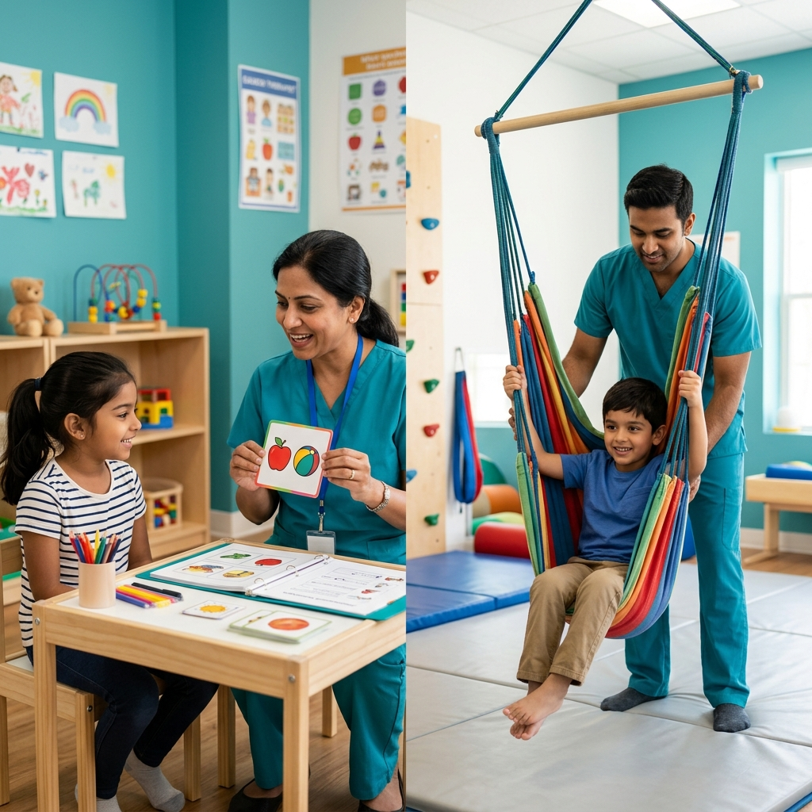

Your pediatrician has recommended therapy for your child, but you're not sure which kind. Should it be speech therapy? Occupational therapy? Both? These two disciplines are the most commonly prescribed pediatric therapies in India, and while they address different areas of development, they frequently overlap. Understanding what each one does — and when your child might need one, the other, or both — helps you make informed decisions and get your child the right support from the start.
What Is Speech Therapy?
Speech-language therapy is provided by a certified Speech-Language Pathologist (SLP) and focuses on communication. This includes:
- Speech sounds (articulation): Producing sounds correctly — saying "rabbit" instead of "wabbit"
- Language comprehension: Understanding instructions, questions, and conversation
- Expressive language: Using words, sentences, and grammar to communicate thoughts
- Fluency: Addressing stuttering and cluttering
- Voice: Pitch, volume, and quality of the voice
- Social communication (pragmatics): Turn-taking, eye contact, reading social cues
- Feeding and swallowing: Oral-motor skills related to eating safely
What Is Occupational Therapy?
Occupational therapy (OT) is provided by a certified Occupational Therapist and focuses on helping children participate in daily life activities — their "occupations." For children, this means play, self-care, and school. OT addresses:
- Fine motor skills: Handwriting, buttoning, using scissors, manipulating small objects
- Gross motor coordination: Balance, body awareness, core strength for sitting at a desk
- Sensory processing: How the brain interprets input from touch, movement, sound, sight, and taste
- Self-care skills: Dressing, feeding, toileting, grooming
- Visual-motor integration: Hand-eye coordination for writing, drawing, and catching a ball
- Attention and self-regulation: Managing emotions, focusing on tasks, transitioning between activities
Side-by-Side Comparison
| Area | Speech Therapy | Occupational Therapy |
|---|---|---|
| Core focus | Communication | Daily life skills & sensory processing |
| Talking & listening | ✅ Primary focus | Supports indirectly |
| Handwriting | Not typically | ✅ Primary focus |
| Sensory issues | Oral-motor sensory only | ✅ Full sensory integration |
| Feeding | ✅ Oral-motor & swallowing | ✅ Sensory-based food aversion |
| Social skills | ✅ Pragmatic language | ✅ Social participation & regulation |
| Behaviour | Communication-based behaviour | ✅ Self-regulation & sensory behaviour |
| School readiness | ✅ Literacy & verbal skills | ✅ Motor, attention & organisation |
When Your Child Needs Speech Therapy
Consider speech therapy if your child:
- Is not talking or has significantly fewer words than peers
- Is difficult to understand — even you struggle to interpret their speech
- Doesn't follow instructions or seems confused by simple commands
- Has a stutter that persists beyond age 4
- Uses only gestures instead of words to communicate
- Shows limited social communication — no eye contact, no conversational turn-taking
- Has been diagnosed with autism, hearing loss, cleft palate, or apraxia
When Your Child Needs Occupational Therapy
Consider occupational therapy if your child:
- Has difficulty with fine motor tasks — struggles to hold a pencil, button clothes, or use utensils
- Is hypersensitive to textures, sounds, or movement — refuses certain clothes, covers ears, avoids swings
- Is a sensory seeker — constantly crashing into things, spinning, mouthing objects, or needing intense physical input
- Has poor body awareness and balance — seems clumsy, falls frequently, can't sit still
- Avoids or resists self-care tasks like brushing teeth, haircuts, or getting dressed
- Has difficulty focusing in the classroom — fidgeting, inability to sit at a desk, poor attention span
- Struggles with emotional regulation — extreme meltdowns, difficulty transitioning between activities
When Your Child Needs Both
Many children benefit from both speech and occupational therapy simultaneously. This is especially common in:
- Autism Spectrum Disorder (ASD): Children with autism often have communication delays alongside sensory processing differences, making both therapies essential
- Global Developmental Delay: When development is delayed across multiple areas — speech, motor, cognitive, and social — a multidisciplinary approach is most effective
- Feeding difficulties: A child who refuses foods may need an SLP for oral-motor skills and an OT for sensory-based food aversions — the two therapists collaborate on the same goal
- Sensory-based communication challenges: A child who can't sit still or regulate their body may not be able to focus during speech therapy. OT builds the regulation foundation that allows the child to engage in speech sessions effectively
Key Insight: When children receive coordinated speech and occupational therapy from a collaborative team, outcomes are significantly better than when each therapy operates in isolation. The whole becomes greater than the sum of its parts.
How Rapture Therapy Centre Coordinates Both
At Rapture Therapy Centre in Rajarajeshwari Nagar, Bangalore, our speech-language pathologists and occupational therapists work under the same roof — literally and clinically. This means:
- Joint assessments: When appropriate, our SLP and OT evaluate your child together, saving you time and providing a comprehensive picture
- Shared treatment goals: Both therapists align on priorities. If the OT is working on seated attention and the SLP needs the child to focus during a language task, they coordinate strategies
- Parent coaching as a team: You receive consistent, unified home guidance rather than conflicting advice from different providers
- Co-treatment sessions: For some children, joint speech-OT sessions are the most effective format
Not Sure Which Therapy Your Child Needs?
Our interdisciplinary team at Rapture Therapy Centre can evaluate your child across speech, language, motor, and sensory domains — all in one appointment. We'll recommend exactly what your child needs and nothing they don't.
Book a Comprehensive Assessment